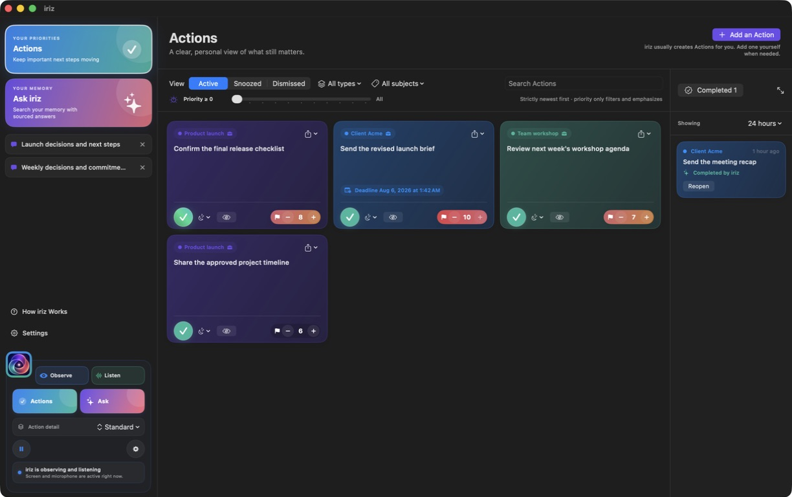
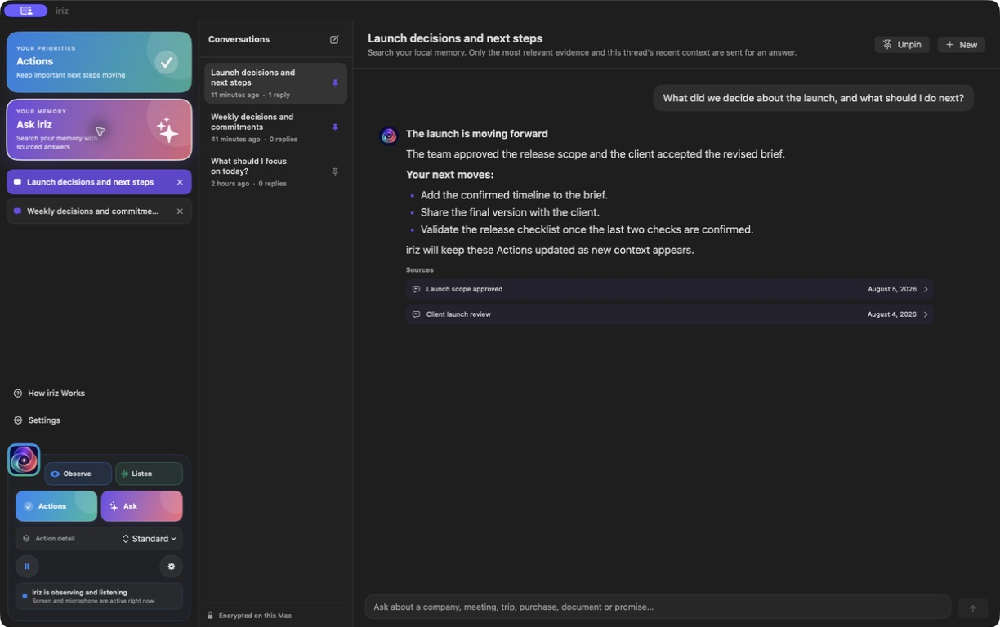
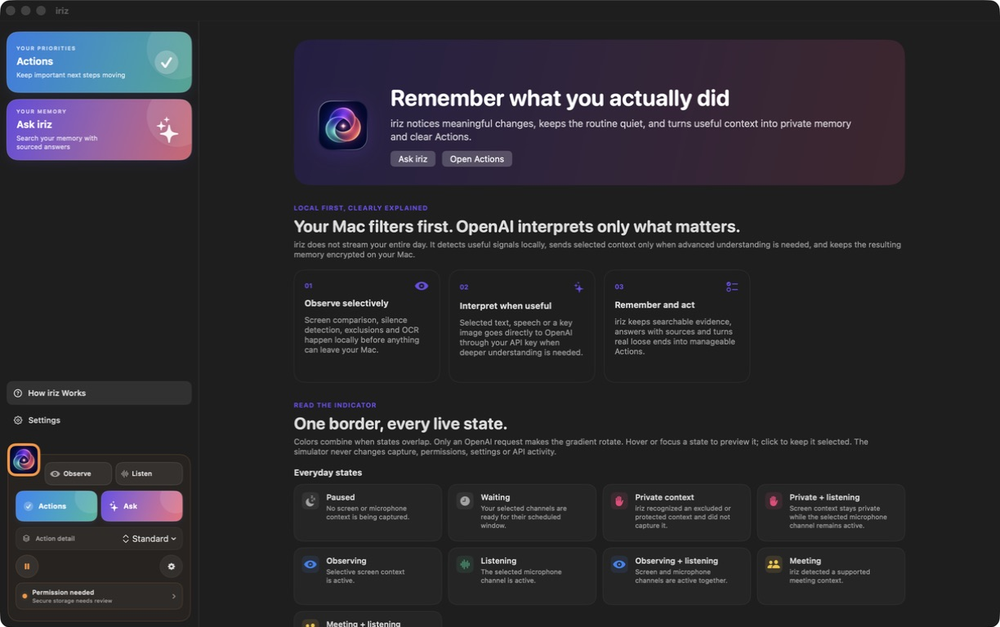

Live the day, uninterrupted
Stay present in the meeting, the message, or the work itself. iriz observes selected context without asking you to maintain another log.
Move through meetings, messages, research, and decisions without stopping to write everything down. When you open iriz, the Actions that matter are already there—ready, updated, and grounded in what actually happened.

iriz quietly separates the meaningful from the routine, so your day can keep flowing. Useful commitments return as clear Actions; the rest stays out of the way.
Stay present in the meeting, the message, or the work itself. iriz observes selected context without asking you to maintain another log.
Routine changes and silence fall away locally. Deeper interpretation happens only when a signal can become useful memory.
Find evolving Actions, sourced answers, and the loose ends worth your attention—already organized when you return.
Local first, selective when it matters. Your Mac handles filtering and recall. OpenAI is used for chosen moments that need deeper language, image, or speech understanding.
Open iriz and move straight to the work that matters. The context is already shaped into Actions you can trust and answers you can trace.
Actions are not another task list you must maintain. They emerge from the promises, decisions, and unfinished work already inside your day, then adapt as new context arrives.
When a detail is buried across tabs and conversations, Ask iriz brings back the answer with the exact moments that support it—without sending your entire history.

iriz uses a calm color language to show when it is observing, listening, protecting private context, recognizing a meeting, or working with OpenAI. You stay informed without opening another window.
Know what iriz is doing without breaking focus or opening the application.
When several channels are active, their colors combine into one clear glance.
You can always tell when selected context is being understood with OpenAI.
The in-app guide explains the local-first flow and lets you explore every indicator state safely. Nothing in the simulator changes capture, permissions, settings, or API activity.

iriz is built around explicit boundaries, local encryption, and deliberate controls. There is no iriz cloud account, ad network, or developer-operated analytics pipeline in the current app.
store: false.The best memory system is the one you do not have to feed. iriz filters the ordinary on your Mac, reaches for advanced intelligence only when it adds value, and brings the useful result back to you.
Native observationScreenCaptureKit observes selected screen changes. Microphone and meeting audio remain separate, optional channels.
On-device filteringApple Vision OCR, local frame comparison, exclusions, and voice-activity detection remove repetition and silence before any AI request.
Task-aware interpretationRoutine classification, speech processing, and intensive reasoning use distinct visual activity levels and task-specific model routing.
Encrypted local memoryStructured memory and raw media use AES-GCM encryption. API and encryption keys stay in macOS Keychain.
Local-first recallSQLite FTS5 and Apple NLEmbedding rank local results first. Only a bounded set of relevant events is used to compose an answer.
An unchanged screen and silence do not trigger OpenAI.
Selected OCR, transcript, URL context, or a key image goes from your Mac to OpenAI with store: false.
The indicator can show Private without exposing the app, domain, or secure field that caused it.
iriz does not record keystrokes, clipboard contents, or camera video.
Stop carrying every unfinished thought in your head. iriz gives your day continuity, so you can stay present now and return to clarity later.
Keep commitments and unfinished work visible without manually rebuilding every next step.
Pin useful conversations and return to sourced answers without sending your full memory.
Find the company, document, appointment, or decision even when you cannot remember where it happened.
Use granular permissions, exclusions, retention settings, and one-click pause whenever context should stay private.
Let iriz hold the context, surface the Actions, and give your attention back to the day in front of you.